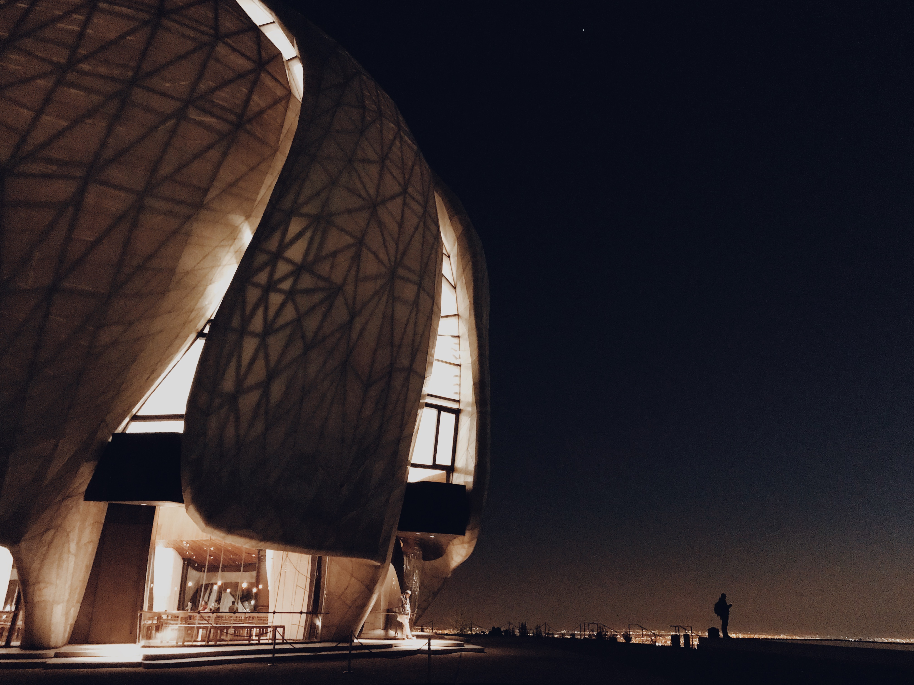
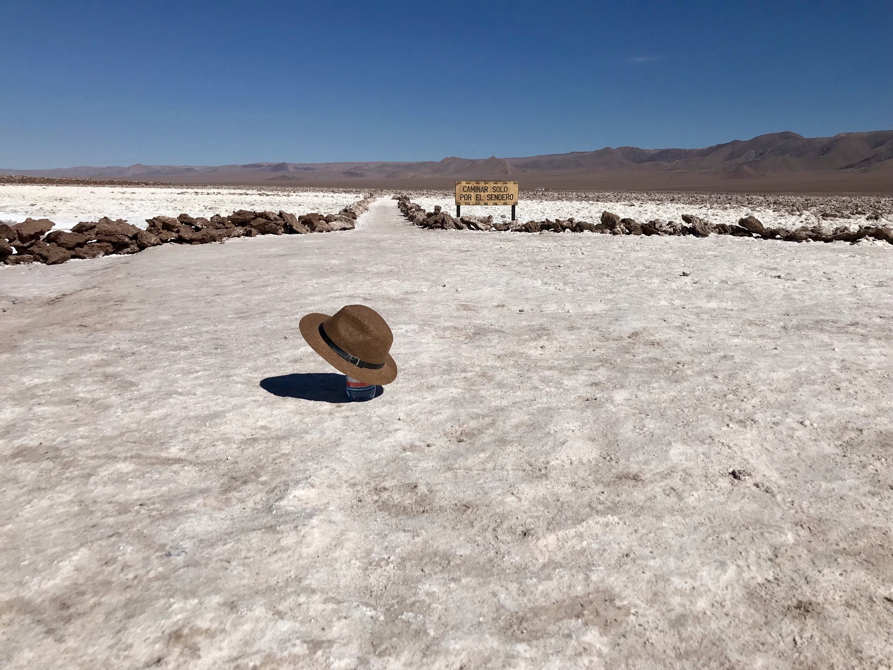
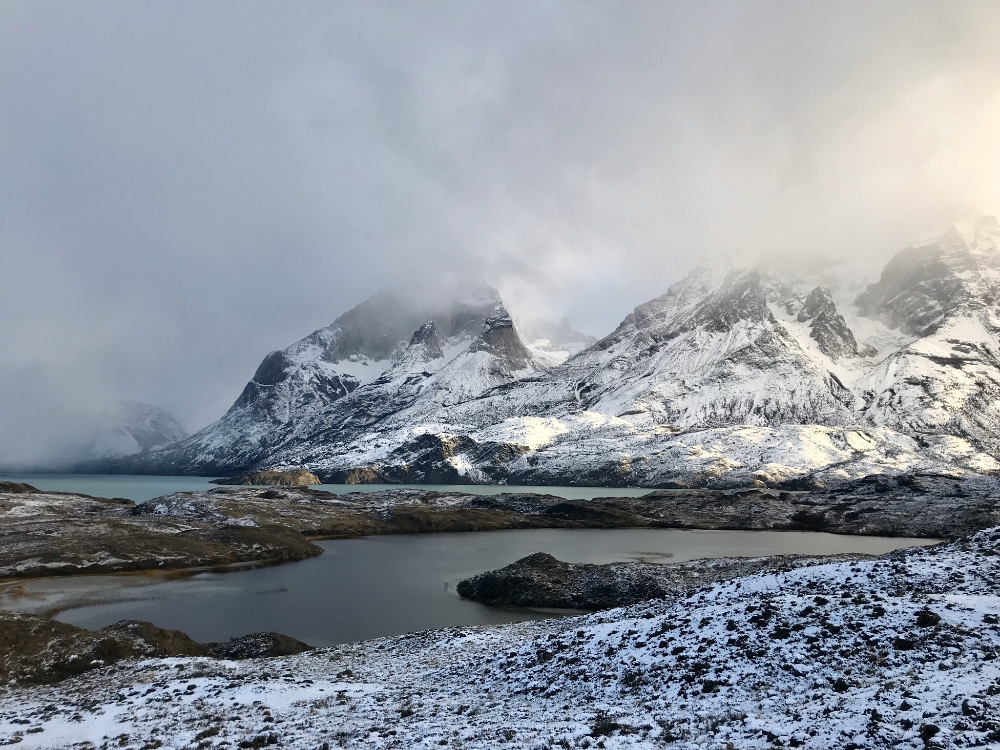
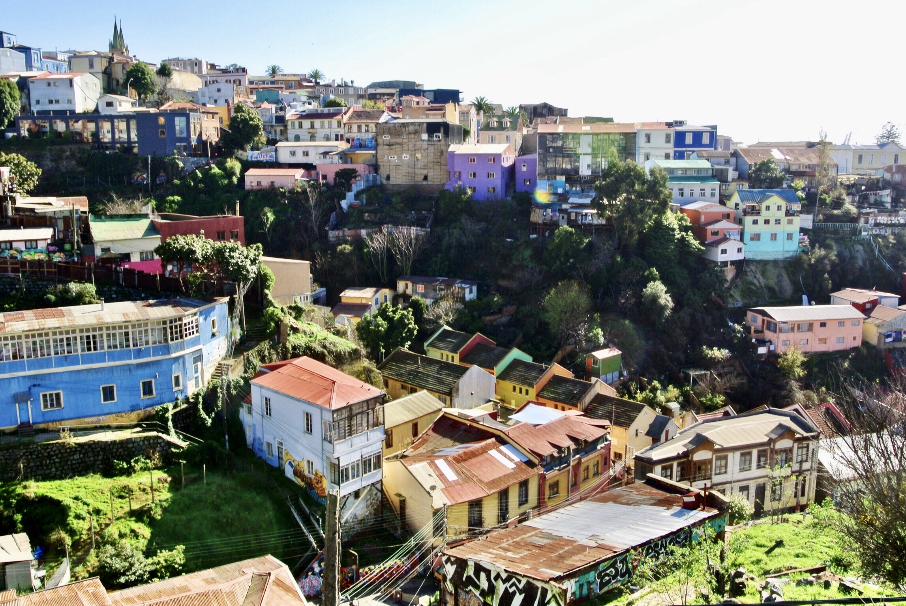
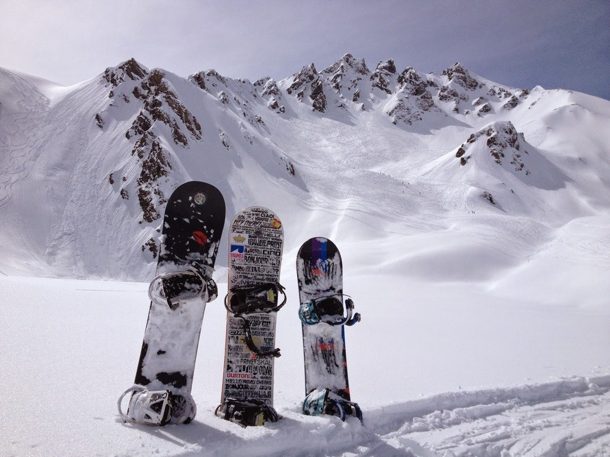

You may know Chile as the long, lithe country which spans the West coast of South America. Due to the scope of its latitudinal reach, Chile boasts a range of climates, ecosystems, and lifestyles as diverse as its inhabitants. Whether you’re seeking a lively city escape, a cozy seaport getaway, or an extreme wilderness adventure, Chile’s got you covered for all your travel cravings.
-
Metropolitan Santiago
Santiago is not only Chile’s capital and largest city, but one of the largest cities of the Americas. It is located in the country’s central valley. Founded in 1541, the city offers a rich history with lots of colonial sight-seeing. You may choose to hike San Cristóbal Hill to view The Statue of Immaculate Conception, take in the mesh of art deco and neo-gothic design of the winding cityscape, or simply bar hop, enjoying wine from one of the largest wine producing and exporting countries in the world. Pictured above is Bahá'í House of Worship of South America, a communal gathering space (and architectural gem) for those of all faiths which overlooks the city.
-
Horseback Riding in Isla de Maipo

If you’re willing to step just outside the metropolis, Maipo Valley is home to some of the world’s greatest vineyards, all set to the backdrop of the Andes Mountains. Enjoy a weekend of wine-tastings topped with horse-back riding through the hills.
-
Trekking through Atacama Desert
The Atacama Desert is a desert plateau in the northern region of Chile, and is known for being the driest non-polar desert in the world, still receiving less precipitation than the polar deserts. This desert is salty, loaning an environment in which few species can thrive, not to mention it rests 16,000 feet above sea level. However, the environment is an astronomer’s paradise, home to some major telescopes and observatories. The desert is warm most of the year, and trekking options are available for all levels. Between the Mars-resembling terrain and the unparalleled stargazing, Atacama Desert should be a must on your Chilean travel list.
-
Hiking in Patagonia
Patagonia is the region of the southernmost tip of South America, shared between Chile and Argentina and divided by the Andes Mountains. The Chilean side of Patagonia features glacial fjords and temperate rainforests. If you fly internationally into Santiago, you will need to take a small plane to this region, followed by a car, and likely a boat, but the trek is well worth it. This will also get you to Antarctica, if that is your ultimate goal. Pictured above are some of the iconic peaks of Torres del Paine National Park, which provide shelter for rare wildlife, such as the friendly guanacos.
-
Colorful Port City Valparaíso
Valparaíso is a historic port city on Chile’s coast. It is known for its steep environment of unique, colorful, clifftop homes. The port continues to function as a naval base, and is colloquially known as “The Jewel of the Pacific” or “The Jewel of South America.” Pablo Neruda, Chile’s beloved poet and diplomat, was inspired by this special place and built one of three of his houses here, La Sebastiana. La Sebastiana is characterized by its grandiose Pacific views and eclectic art collection and architecture choices. It is now a museum, along with the rest of his distinctive homes.
-
Skiing Valle Nevado
If you’d like to add a little adventure to your trip, Chile is home to numerous ski resorts. Chile’s winter is North American summer, so get ready to shred in July with a view of the Andes’ rocky peaks, just be prepared for the thin air.